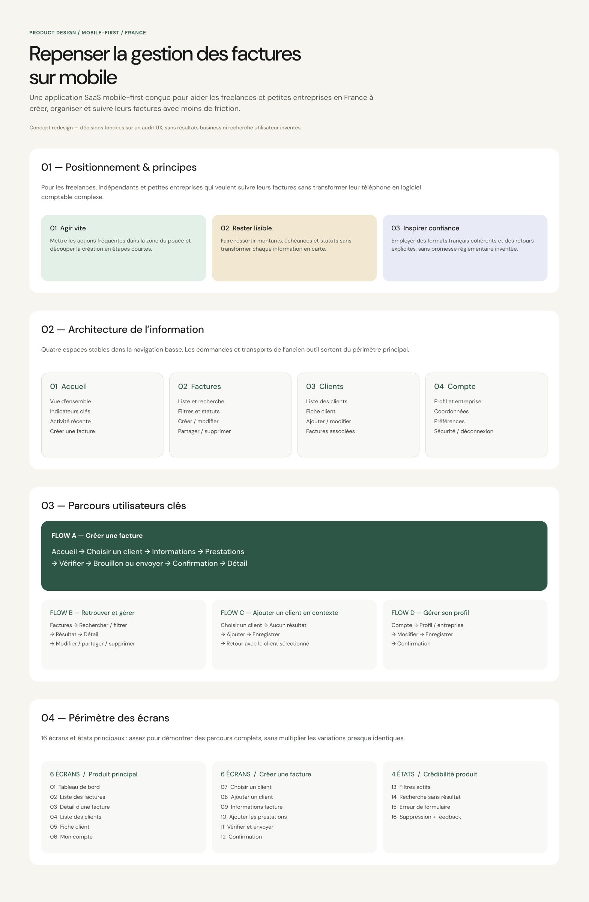

Prioritise, rather than compress.
DecisionI surfaced totals, status and the next useful action, instead of shrinking a desktop dashboard into 390 pixels. The result is a calmer first scan.
01 · Overview — Concept design · 2026
A mobile-first experience that helps freelancers and small businesses create, organise and track invoices with less friction.
The earlier tool could store invoices, but its fragmented routes made small actions feel like separate jobs. On mobile, every context switch adds effort.
My framingI treated speed as continuity rather than fewer features: keep the user’s current object, choices and next action visible from start to finish.
DecisionI surfaced totals, status and the next useful action, instead of shrinking a desktop dashboard into 390 pixels. The result is a calmer first scan.
DecisionA missing client can be created inside the invoice flow and returns already selected. The detour solves the problem without becoming a second journey.
DecisionSelected, loading, empty, validation and success states explain what changed and what happens next, reducing dependence on instructional copy.
I deliberately limited the primary navigation to four spaces. Every daily action belongs to one of them, so the bottom bar stays predictable while creation remains contextual.
Cash overview, alerts and direct actions
Search, filter, create and track
Directory, profiles and related invoices
Business, payment and notification settings
A separate “Create” destination would duplicate actions and turn a verb into a place.
ChosenCreation starts from the relevant object or a persistent action, while navigation stays object-based.

I split the flow around user decisions—not database fields. Client, invoice information, line items and review each have a clear moment, while progress and preserved data maintain orientation.
Context continuityThe new client returns selected inside the invoice.
Progressive disclosureOnly the current decision is foregrounded.
ResultThe user can complete the core journey without restarting, backtracking or guessing whether data was saved.
The mid-fidelity pass included realistic totals, statuses and actions because empty boxes could not reveal hierarchy problems. It let me check whether each screen answered three questions: where am I, what matters now and what can I do next?

I kept one deep-green accent for orientation and action. Colour never carries meaning alone: label, icon and hierarchy reinforce every invoice state.
Direct and compact at mobile sizes.
One deep green for action and orientation.
Soft containers; pill controls only where state changes.
Default, pressed, loading, success, error and empty.


I gave the dashboard the strongest overview, invoice creation the clearest sequence and confirmation moments the highest contrast. The screens are not equally important, so the presentation is not equal either.


After sending, confirmation resolves uncertainty and leads directly to the created invoice, where the next useful actions remain available.


A clear sequence can feel faster than one overloaded form when progress, data and next actions remain visible.
For frequent users, I would explore reusable line items, duplication and draft templates without weakening the first-use model.
I would test terminology, interruption recovery, tax cases and the speed of repeat invoicing before extending the feature set.
Mobile UI craft · Interaction design · Product judgement